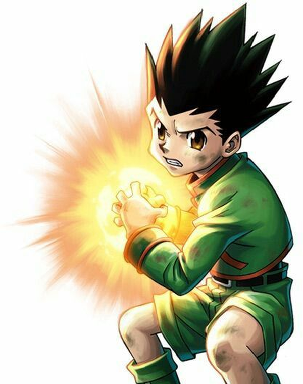
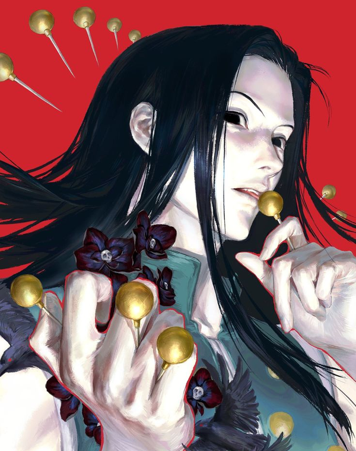
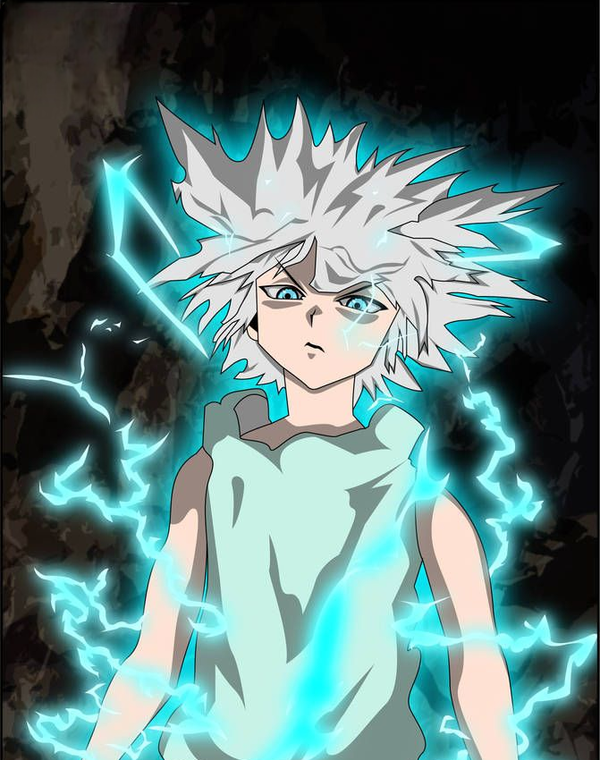

Les 12 archétypes de Nen
À la création, ou lorsqu'il apprend le Nen en cours de jeu, le personnage choisit un archétype parmi douze. L'archétype fixe ses affinités de départ dans les six catégories de Hatsu.
L'affinité
Chaque personnage a une affinité, en pourcentage, pour chacune des six catégories de Hatsu. Elles se disposent en hexagone (renforcement, émission, manipulation, spécialisation, conjuration, transmutation, puis retour au renforcement) : plus deux catégories y sont proches, plus leurs affinités se ressemblent. Chez un archétype simple, sa catégorie vaut 100 %, les voisines 80 %, le cran suivant 60 %, l'opposée 40 %.
Cette affinité joue deux rôles :
| Affinité | Sigle | Ce qu'elle gouverne |
|---|---|---|
| Apprentissage | AA | la vitesse à laquelle on apprend et progresse dans une catégorie |
| Emploi | AE | la puissance du Nen quand on emploie cette catégorie |
Le pourcentage fixe les deux à la fois : une affinité élevée s'apprend vite et donne un Nen puissant, une affinité faible s'apprend lentement et donne un Nen faible.
Simple ou hybride ?
Six archétypes sont simples : ils concentrent le potentiel sur une seule catégorie, portée à 100 %. Six autres sont hybrides : ils le répartissent sur deux catégories voisines, à 90 % chacune.
Le choix se fait entre puissance et polyvalence : l'archétype simple est le plus puissant dans sa catégorie ; l'archétype hybride renonce à ce maximum pour deux catégories voisines presque à égalité, plus adaptées aux situations variées.
Les deux hybrides de la spécialisation (manipulateur-spécialiste et conjurateur-spécialiste) restent exceptionnels : la spécialisation ne s'obtient presque jamais par le seul entraînement, et ces archétypes sont réservés aux porteurs de l'avantage Spécialiste.
Choisir son archétype
Un personnage choisit librement son archétype, sauf la spécialisation et ses deux hybrides (manipulateur-spécialiste et conjurateur-spécialiste), réservés aux porteurs de l'avantage Spécialiste : à peine 0.033 % des utilisateurs de Nen y accèdent.
À défaut de choisir, le personnage tire son archétype avec un d100 dans la table ci-dessous. La spécialisation et ses deux hybrides n'y figurent pas.
| 1d100 | Archétype |
|---|---|
| 01–22 | Renforceur |
| 23–41 | Émitteur |
| 42–56 | Transmuteur |
| 57–68 | Manipulateur |
| 69–80 | Conjurateur |
| 81–87 | Renforceur-Émitteur |
| 88–93 | Renforceur-Transmuteur |
| 94–97 | Émitteur-Manipulateur |
| 98–100 | Transmuteur-Conjurateur |
* Valeur atteinte uniquement avec l'avantage Spécialiste ; sans lui, la spécialisation reste à 0 %.
Archétypes simples
Un archétype simple porte sa catégorie à 100 %, et les autres décroissent selon l'hexagone : 80 % pour les deux voisines, 60 % au cran suivant, 40 % pour l'opposée.
Renforceur
Le Renforceur amplifie de son aura les capacités d'un corps ou d'un objet (force, vitesse, dureté, endurance, guérison). C'est la catégorie la plus équilibrée, aussi solide en défense qu'en attaque, et la mieux adaptée au corps à corps. Ses pouvoirs sont peu spectaculaires, mais aucune autre catégorie ne l'égale en puissance brute au contact.
| Catégorie | Base d'Affinité |
|---|---|
| Renforcement | 100 % |
| Émission | 80 % |
| Transmutation | 80 % |
| Manipulation | 60 % |
| Conjuration | 60 % |
| Spécialisation | 0 % ou 40 %* |

PinterestGon Freecss
Franklin
Émitteur
L'Émitteur déploie son aura loin de son corps. L'aura ordinaire se disperse dès qu'elle s'éloigne ; la sienne reste stable et intacte à grande distance. Il frappe à des distances qu'aucune autre catégorie n'atteint, mais son aura déportée l'expose au corps à corps, qu'il préfère éviter.
| Catégorie | Base d'Affinité |
|---|---|
| Renforcement | 80 % |
| Émission | 100 % |
| Transmutation | 60 % |
| Manipulation | 80 % |
| Conjuration | 40 % |
| Spécialisation | 0 % ou 60 %* |
Transmuteur
Le Transmuteur change les propriétés de son aura pour lui faire imiter une substance : tranchante, élastique, collante, électrique ou brûlante. Elle en prend les propriétés, jamais la matière réelle : une aura électrique garde les qualités d'aura et n'agit pas tout à fait comme une vraie décharge. Au contact, ses coups portent l'effet qu'il a donné à son aura.
| Catégorie | Base d'Affinité |
|---|---|
| Renforcement | 80 % |
| Émission | 60 % |
| Transmutation | 100 % |
| Manipulation | 40 % |
| Conjuration | 80 % |
| Spécialisation | 0 % ou 60 %* |
Hisoka

PinterestIllumi Zoldyck
Manipulateur
Le Manipulateur emploie son aura à contrôler des êtres et des objets. Son pouvoir s'assortit presque toujours de conditions fixées d'avance (marionnettes, ordres imposés, emprise établie par un contact ou un rituel) : plus elles sont contraignantes, plus son emprise est forte. Il combat rarement de front : il prend ses cibles sous son emprise pour qu'elles se battent à sa place.
| Catégorie | Base d'Affinité |
|---|---|
| Renforcement | 60 % |
| Émission | 80 % |
| Transmutation | 40 % |
| Manipulation | 100 % |
| Conjuration | 60 % |
| Spécialisation | 0 % ou 80 %* |
Conjurateur
Le Conjurateur donne à son aura une existence matérielle : il crée des objets réels et indépendants, que n'importe qui peut voir et toucher. Une fois l'objet maîtrisé, il l'invoque et le congédie à volonté, et lui attache des propriétés qu'aucune autre catégorie ne produirait. C'est la catégorie la plus inventive du Nen : un objet conjuré peut faire presque n'importe quoi, à condition que son créateur en ait fixé les règles.
| Catégorie | Base d'Affinité |
|---|---|
| Renforcement | 60 % |
| Émission | 40 % |
| Transmutation | 80 % |
| Manipulation | 60 % |
| Conjuration | 100 % |
| Spécialisation | 0 % ou 80 %* |
Shizuku Murasaki
Chrollo Lucilfer
Spécialiste
La spécialisation réunit les pouvoirs qui n'entrent dans aucune des cinq autres catégories. Ses effets sont uniques, propres à chaque Spécialiste, sans règle commune. Elle vient de naissance bien plus que de l'entraînement : c'est de loin l'archétype le plus rare et le plus imprévisible.
Cet archétype, comme ses deux hybrides, ne peut être choisi sans l'avantage Spécialiste : sans lui, l'affinité de spécialisation reste à 0 %.
| Catégorie | Base d'Affinité |
|---|---|
| Renforcement | 40 % |
| Émission | 60 % |
| Transmutation | 60 % |
| Manipulation | 80 % |
| Conjuration | 80 % |
| Spécialisation | 0 % ou 100 %* |
Archétypes hybrides
Un archétype hybride répartit son potentiel entre deux catégories voisines : 90 % pour les deux pôles, 70 % pour leurs voisines, 50 % pour les deux dernières. Aucune des deux n'atteint les 100 % d'un archétype simple, mais l'hybride dispose de deux catégories presque au maximum.
Renforceur-Émitteur
Le Renforceur-Émitteur amplifie son corps comme un renforceur, puis détache cette puissance pour frapper à distance comme un émitteur. De près comme de loin, ses coups gardent la force du renforcement : c'est un archétype très polyvalent.
| Catégorie | Base d'Affinité |
|---|---|
| Renforcement | 90 % |
| Émission | 90 % |
| Transmutation | 70 % |
| Manipulation | 70 % |
| Conjuration | 50 % |
| Spécialisation | 0 % ou 50 %* |
Leorio

PinterestKillua Zoldyck
Renforceur-Transmuteur
Le Renforceur-Transmuteur amplifie son corps comme un renforceur, puis change les propriétés de son aura comme un transmuteur. Il combat au contact : ses coups portent le tranchant, l'électricité ou tout autre effet donné à son aura.
| Catégorie | Base d'Affinité |
|---|---|
| Renforcement | 90 % |
| Émission | 70 % |
| Transmutation | 90 % |
| Manipulation | 50 % |
| Conjuration | 70 % |
| Spécialisation | 0 % ou 50 %* |
Émitteur-Manipulateur
L'Émitteur-Manipulateur projette son aura au loin sans en perdre le contrôle. Il combine la portée de l'émission et l'emprise de la manipulation : ses tirs frappent à distance et suivent les conditions qu'il leur a fixées.
| Catégorie | Base d'Affinité |
|---|---|
| Renforcement | 70 % |
| Émission | 90 % |
| Transmutation | 50 % |
| Manipulation | 90 % |
| Conjuration | 50 % |
| Spécialisation | 0 % ou 70 %* |
Kalluto Zoldyck
Kite
Transmuteur-Conjurateur
Le Transmuteur-Conjurateur change les propriétés de son aura comme un transmuteur, puis lui donne une existence matérielle comme un conjurateur. Il crée des objets réels, dotés des propriétés de son choix : tranchant, élasticité, charge électrique.
| Catégorie | Base d'Affinité |
|---|---|
| Renforcement | 70 % |
| Émission | 50 % |
| Transmutation | 90 % |
| Manipulation | 50 % |
| Conjuration | 90 % |
| Spécialisation | 0 % ou 70 %* |
Manipulateur-Spécialiste
Le Manipulateur-Spécialiste combine le contrôle de la manipulation et les effets uniques de la spécialisation. Il contrôle des êtres et des objets, et son emprise possède un trait unique, hors des règles communes. C'est l'un des deux hybrides réservés aux spécialistes.
| Catégorie | Base d'Affinité |
|---|---|
| Renforcement | 50 % |
| Émission | 70 % |
| Transmutation | 50 % |
| Manipulation | 90 % |
| Conjuration | 70 % |
| Spécialisation | 0 % ou 90 %* |
Neferpitou
Kurapika
Conjurateur-Spécialiste
Le Conjurateur-Spécialiste crée des objets réels comme un conjurateur, mais les dote de propriétés ou de fonctions qu'aucune autre catégorie ne produit, comme un spécialiste. C'est le second hybride réservé aux spécialistes.
| Catégorie | Base d'Affinité |
|---|---|
| Renforcement | 50 % |
| Émission | 50 % |
| Transmutation | 70 % |
| Manipulation | 70 % |
| Conjuration | 90 % |
| Spécialisation | 0 % ou 90 %* |
0 m
0 km/h : immobile, aucun déplacement pendant le round.
2 m
1.2 km/h : le pas d'un visiteur de musée qui s'attarde devant chaque œuvre.
4 m
2.4 km/h : la flânerie d'un passant qui fait du lèche-vitrines.
10 m
6 km/h : la marche rapide d'un piéton pressé d'attraper son bus.
3 m
1.8 km/h : le pas d'une personne âgée au déambulateur, 0.5 m par seconde.
6 m
3.6 km/h : un mètre par seconde tout rond, la promenade tranquille au parc.
15 m
9 km/h : un footing tranquille, à 6 min 40 s au kilomètre.
8 m
4.8 km/h : la marche normale d'un adulte en ville.
20 m
12 km/h : les 5 minutes au kilomètre, allure de référence du coureur amateur régulier.
12 m
7.2 km/h : l'allure d'un marcheur nordique entraîné, à la frontière entre marche et course.
30 m
18 km/h : un cycliste qui roule d'un bon train en ville.
16 m
9.6 km/h : le footing d'un joggeur occasionnel, 10 km bouclés en un peu plus d'une heure.
40 m
24 km/h : le sprint d'un adulte ordinaire, sans entraînement particulier.
50 m
30 km/h : un cycliste sportif lancé sur le plat.
24 m
14.4 km/h : un coureur bien entraîné, qui boucle 10 km en moins de 42 minutes.
60 m
36 km/h : la moyenne exacte d'un sprinteur qui court le 100 m en 10 secondes pile.
14 m
8.4 km/h : le trottinement d'un débutant en course à pied, plus de 7 minutes au kilomètre.
28 m
16.8 km/h : un bon coureur de club, 10 km avalés en moins de 36 minutes.
70 m
42 km/h : un cheval au galop, sans forcer l'allure.
32 m
19.2 km/h : l'allure d'un marathonien professionnel, marathon couru en 2 h 12.
80 m
48 km/h : un chat domestique en pleine pointe de vitesse.
100 m
60 km/h : la moyenne d'un pur-sang sur toute la durée d'une course hippique.
150 m
90 km/h : une voiture lancée sur une route de campagne.
200 m
120 km/h : une voiture qui file sur l'autoroute.
120 m
72 km/h : la pointe d'un lévrier de course, le chien le plus rapide du monde.
300 m
180 km/h : un premier service de tennis sur le circuit professionnel.
160 m
96 km/h : un guépard en pleine chasse, tout près des 98 km/h de la pointe la plus rapide jamais chronométrée.
400 m
240 km/h : un parachutiste en chute libre qui pique tête la première.
500 m
300 km/h : un TGV en service commercial, qui roule à 300 ou 320 km/h selon les lignes.
750 m
450 km/h : un peu au-dessus du train le plus rapide en service, le maglev de Shanghai et ses 431 km/h.
1 km
600 km/h : quasiment le record du monde ferroviaire, 603 km/h par le maglev japonais L0 en 2015.
600 m
360 km/h : juste sous le record de vitesse en MotoGP, les 368.6 km/h de Jorge Martin à Mugello en 2026.
1.5 km
900 km/h : un avion de ligne en croisière.
800 m
480 km/h : à peine au-dessus du record de vitesse d'un hélicoptère, les 472 km/h de l'Eurocopter X3 en vol horizontal.
2 km
1 200 km/h : presque le record de vitesse terrestre, les 1 227.9 km/h supersoniques de la Thrust SSC en 1997.
1.2 km
720 km/h : un peu au-dessus de la pointe d'un P-51 Mustang, chasseur à hélice de la Seconde Guerre mondiale (703 km/h).
3 km
1 800 km/h : un peu sous la vitesse maximale d'un chasseur Rafale, Mach 1.8 en altitude (environ 1 900 km/h).
1.6 km
960 km/h : tout près de la pointe du Cessna Citation X+, l'avion d'affaires le plus rapide (Mach 0.935, soit 978 km/h).
4 km
2 400 km/h : la vitesse maximale d'un F-22 Raptor (Mach 2.25).
5 km
3 000 km/h : la pointe du MiG-25, le chasseur le plus rapide jamais mis en service (Mach 2.83).
7.5 km
4 500 km/h : la balle de fusil la plus véloce, une .220 Swift, sort du canon à environ 1 250 m par seconde.
10 km
6 000 km/h : un obus-flèche de char moderne à la sortie du canon, environ 1 700 m par seconde.
6 km
3 600 km/h : un peu au-dessus du record du SR-71 Blackbird, l'avion à réaction habité le plus rapide (3 529.6 km/h).
15 km
9 000 km/h : un projectile de canon électromagnétique testé par l'US Navy, environ Mach 7 à la sortie des rails.
25 km
15 000 km/h : à peu près la vitesse de libération de Mercure, les 4.25 km par seconde qui suffisent pour échapper à la planète.
20 km
12 000 km/h : au-dessus du record de l'avion le plus rapide jamais construit, le drone hypersonique X-43A (Mach 9.6, environ 11 000 km/h).
50 km
30 000 km/h : un peu plus vite que la Station spatiale internationale, qui orbite à 27 600 km/h.
40 km
24 000 km/h : une ogive de missile intercontinental qui retombe sur sa cible, environ Mach 20.
100 km
60 000 km/h : la sonde Voyager 1, l'objet humain le plus lointain, file à 17 km par seconde (61 200 km/h).
250 km
150 000 km/h : une comète tombée des confins du Système solaire croise l'orbite terrestre à 42 km par seconde.
200 km
120 000 km/h : un peu plus vite que la Terre elle-même sur son orbite autour du Soleil (107 000 km/h).
500 km
300 000 km/h : seule la sonde solaire Parker est allée aussi vite, 343 000 km/h dès son premier passage près du Soleil fin 2018.
0 m
Aucun saut : les pieds ne quittent pas le sol.
0.1 m
Un mug posé sur la table (environ 10 cm).
0.2 m
Une haute marche d'escalier (20 cm).
0.3 m
Une feuille A4 posée debout (29.7 cm).
0.5 m
La hauteur du genou d'un adulte (environ 50 cm).
1 m
Un garde-corps de balcon (1 m, hauteur minimale réglementaire).
2 m
La barre transversale d'un but de handball (2 m).
1.5 m
Une clôture de jardin en grillage (1.5 m).
3 m
L'arceau d'un panier de basket (3.05 m).
2.5 m
Le plafond d'un logement récent (2.5 m).
5 m
La tête d'une girafe mâle adulte (environ 5 m).
3.5 m
Le garrot d'un grand éléphant d'Afrique mâle (environ 3.5 m).
7 m
Le faîte du toit d'une maison à un étage (environ 7 m).
10 m
La plus haute plate-forme de plongeon olympique (10 m).
20 m
La corniche d'un immeuble haussmannien de six étages (environ 20 m).
15 m
Le toit d'un immeuble de quatre étages (environ 15 m).
30 m
La cime d'un grand chêne adulte (environ 30 m).
25 m
L'obélisque de la Concorde à Paris (23 m).
50 m
L'Arc de Triomphe (50 m).
35 m
La colonne Trajane à Rome, socle compris (35 m).
70 m
Les tours de Notre-Dame de Paris (69 m).
100 m
La statue de la Liberté, du sol au sommet de la torche (93 m).
200 m
La tour Montparnasse (210 m).
150 m
La grande pyramide de Gizeh à sa construction (146.6 m).
300 m
La tour Eiffel sans ses antennes (300 m).
250 m
Le toit du 30 Rockefeller Plaza à New York (259 m).
500 m
La tour Taipei 101 (508 m).
350 m
Le plus haut pylône du viaduc de Millau (343 m).
700 m
Les plus hautes falaises des gorges du Verdon (700 m).
1 km
Le Salto Ángel au Venezuela, plus haute cascade du monde (979 m).
2 km
Le sommet du mont Ventoux (1 910 m).
1.5 km
La profondeur du Grand Canyon (environ 1.6 km).
3 km
La Zugspitze, point culminant de l'Allemagne (2 962 m).
2.5 km
Le col du Grand-Saint-Bernard, entre la Suisse et l'Italie (2 469 m).
5 km
Le sommet du mont Blanc (environ 4 806 m).
3.5 km
Le sommet de l'Etna (environ 3 350 m).
7 km
L'Aconcagua, plus haut sommet des Amériques (6 961 m).
10 km
L'altitude de croisière d'un avion de ligne (environ 10 000 m).
20 km
L'altitude de vol de l'avion espion U-2 (environ 21 km).
15 km
Le sommet d'un cumulonimbus d'orage tropical (environ 15 km).
30 km
L'altitude où éclatent les ballons-sondes météo (30 à 35 km).
25 km
L'altitude de croisière du SR-71 Blackbird (environ 26 km).
50 km
La stratopause, sommet de la stratosphère (environ 50 km).
35 km
Le record d'altitude d'un avion à réaction, un MiG-25 soviétique (37 650 m).
70 km
La mésosphère, où s'embrasent la plupart des étoiles filantes (entre 70 et 100 km).
100 km
La ligne de Kármán (100 km), frontière conventionnelle de l'espace.
0 kg
Un flocon de neige, si leger que la main ne sent pas son poids.
1 kg
Un litre d'eau, qui pese tout juste 1 kilo.
2 kg
Un ordinateur portable de 15 pouces.
5 kg
Un gros chat domestique adulte.
10 kg
Un pneu de voiture de tourisme, sans la jante.
3 kg
Un nouveau-ne humain, a la naissance.
8 kg
Une grosse pasteque bien mure.
20 kg
Un bidon de 20 litres rempli d'eau.
15 kg
Un four a micro-ondes de cuisine.
50 kg
Un grand sac de riz de 50 kilos, comme on en charge sur les quais.
30 kg
Un labrador adulte de belle taille.
100 kg
Un panda geant adulte.
60 kg
Une personne adulte plutot mince.
200 kg
Un piano droit de salon.
300 kg
Un grand ours brun male, un grizzly.
150 kg
Un gros sanglier male.
500 kg
Un cheval de selle adulte.
1 t
Une petite voiture citadine.
3 t
Un gros pick-up americain a 4 roues motrices.
10 t
Un des plus grands tyrannosaures connus, le specimen Scotty : pres de 9 tonnes.
2 t
Un rhinoceros blanc adulte.
6 t
Un grand elephant d'Afrique male, le plus lourd des animaux terrestres.
20 t
Un requin-baleine, le plus grand poisson du monde.
30 t
Une baleine a bosse adulte.
5 t
Un elephant d'Asie male.
15 t
Une femelle de cachalot.
50 t
Un grand cachalot male.
100 t
Une grosse locomotive de train de ligne.
300 t
Un Airbus A350 a pleine charge au decollage : environ 300 tonnes.
1 000 t
Une petite corvette de guerre.
200 t
La statue de la Liberte, sans son socle : environ 200 tonnes.
600 t
La statue du Christ Redempteur, a Rio de Janeiro : environ 635 tonnes.
2 000 t
La navette spatiale americaine, pleine, au decollage : environ 2 030 tonnes.
3 000 t
La fusee Saturn V, pleine, au decollage : environ 2 970 tonnes.
500 t
Un Boeing 747 a pleine charge au decollage : environ 450 tonnes.
1 500 t
La fusee Falcon Heavy au decollage : environ 1 420 tonnes.
5 000 t
Une fregate de guerre moderne.
10 000 t
La tour Eiffel entiere : environ 10 100 tonnes.
30 000 t
Un porte-avions de la Seconde Guerre mondiale, de la classe Essex : environ 30 000 tonnes.
100 000 t
Un porte-avions nucleaire de classe Nimitz, a pleine charge : environ 100 000 tonnes.
20 000 t
Un sous-marin nucleaire lance-missiles de classe Ohio, en plongee : pres de 19 000 tonnes.
60 000 t
Un cuirasse de classe Iowa, a pleine charge : environ 57 500 tonnes.
200 000 t
Un grand porte-conteneurs a pleine charge : environ 200 000 tonnes.
300 000 t
Un supertanker plein de petrole, un VLCC : environ 320 000 tonnes.
50 000 t
Le paquebot Titanic : environ 52 000 tonnes.
150 000 t
Un petrolier Suezmax a pleine charge : environ 160 000 tonnes.
500 000 t
Le Burj Khalifa, le plus haut gratte-ciel du monde : environ 500 000 tonnes.
1 000 000 t
Une butte rocheuse isolee d'environ 55 metres de haut.
3 000 000 t
La moitie de la grande pyramide de Gizeh.
10 000 000 t
Une colline rocheuse isolee d'environ 120 metres de haut.
2 000 000 t
Un piton rocheux isole d'environ 70 metres de haut.
6 000 000 t
La grande pyramide de Gizeh : environ 5.9 millions de tonnes.
20 000 000 t
Le beton du barrage de Grand Coulee, aux Etats-Unis : plus de 20 millions de tonnes.
30 000 000 t
Le beton du barrage d'Itaipu, entre le Bresil et le Paraguay : pres de 30 millions de tonnes.
5 000 000 t
Le palais du Parlement de Bucarest, le batiment le plus lourd du monde : environ 4 millions de tonnes.
15 000 000 t
Le beton du barrage de la Grande Dixence, en Suisse, le plus haut barrage-poids du monde : environ 15 millions de tonnes.
50 000 000 t
Une grosse colline rocheuse d'environ 200 metres de haut.
100 000 000 t
Les remblais du barrage d'Assouan, en Egypte : pres de 100 millions de tonnes de roche et de terre.
300 000 000 t
Un mont rocheux d'environ 350 metres de haut.
1 000 000 000 t
Une petite montagne d'environ 500 metres de haut.
×0
Aucun lancer : l'arme tombe aux pieds du lanceur.
×0.2
Une dague (10 m au mieux) ne porte plus qu'à 2 m.
×0.4
Une dague (10 m au mieux) ne porte plus qu'à 4 m.
×0.6
Une dague (10 m au mieux) ne porte plus qu'à 6 m.
×0.8
Une dague (10 m au mieux) ne porte plus qu'à 8 m.
×1
Une dague garde ses portées du livre : 5 m en courte, 10 m au mieux.
×1.5
Une dague (10 m au mieux) vole à 15 m.
×2
Une dague (10 m au mieux) vole à 20 m.
×2.5
Une dague (10 m au mieux) vole à 25 m.
×3
Une dague (10 m au mieux) vole à 30 m.
×5
Une dague (10 m au mieux) vole à 50 m.
×7
Une dague (10 m au mieux) vole à 70 m.
×10
Une dague (10 m au mieux) vole à 100 m, toute la ligne droite d'un sprint olympique.
×20
Une dague (10 m au mieux) vole à 200 m, presque la hauteur de la tour Montparnasse (209 m).
×30
Une dague (10 m au mieux) vole à 300 m, un peu moins que la hauteur de la tour Eiffel (330 m).
×50
Une dague (10 m au mieux) vole à 500 m, presque la hauteur de la tour Taipei 101 (508 m).
×70
Une dague (10 m au mieux) vole à 700 m.
×100
Une dague (10 m au mieux) vole à 1 km.
×200
Une dague (10 m au mieux) vole à 2 km, un peu plus que la longueur des Champs-Élysées (1.9 km).
×300
Une dague (10 m au mieux) vole à 3 km.
×500
Une dague (10 m au mieux) vole à 5 km, une heure de marche.
×700
Une dague (10 m au mieux) vole à 7 km.
×1 000
Une dague (10 m au mieux) vole à 10 km, l'altitude de croisière d'un avion de ligne.
×2 000
Une dague (10 m au mieux) vole à 20 km, presque la distance d'un semi-marathon (21.1 km).
×3 000
Une dague (10 m au mieux) vole à 30 km, un peu moins que le pas de Calais à son point le plus étroit (33.3 km).
×5 000
Une dague (10 m au mieux) vole à 50 km, plus que la distance d'un marathon (42.195 km).
×7 000
Une dague (10 m au mieux) vole à 70 km.
×10 000
Une dague (10 m au mieux) vole à 100 km ; lancée à la verticale, elle atteindrait la ligne de Kármán, la frontière de l'espace.
×20 000
Une dague (10 m au mieux) vole à 200 km, l'altitude des plus basses orbites terrestres.
×30 000
Une dague (10 m au mieux) vole à 300 km, ce qu'un TGV lancé à 300 km/h parcourt en une heure.
×50 000
Une dague (10 m au mieux) vole à 500 km, au-delà de Paris-Lyon à vol d'oiseau (environ 390 km).
moins de 6 s
Jeté dans l'eau glacée, le corps hoquette malgré lui : il ne bloque pas l'air plus de quelques secondes.
0 s
Poumons en feu à la fin d'un sprint total, on ne peut plus bloquer l'air une seule seconde.
6 s
Le temps de passer le visage sous l'eau pour se rincer, une retenue si brève qu'elle ne coûte aucun effort.
12 s
Le temps de plonger au fond de la piscine ramasser un objet et de remonter.
18 s
Le temps qu'un surfeur reste plaqué sous l'eau après une chute, jusqu'à ce que la vague passe.
30 s
La retenue tranquille d'un baigneur ordinaire qui garde la tête sous l'eau, sans aucun entraînement.
1 min
Une minute pleine, à la portée de la plupart des adultes qui s'y appliquent au repos.
2 min
Ce qu'atteint un plongeur en apnée débutant après quelques séances d'entraînement.
3 min
La retenue d'un apnéiste amateur régulier, immobile pour épargner son oxygène.
5 min
Ce que tient un apnéiste confirmé, parfaitement détendu et sans un geste.
10 min
Presque le record du monde d'apnée statique sans oxygène : Stéphane Mifsud a tenu 11 min 35 s en 2009.
20 min
La plongée d'un manchot empereur, qui reste jusqu'à une vingtaine de minutes sous la banquise pour chasser.
30 min
Une tortue de mer au repos reste facilement une demi-heure sous l'eau entre deux bouffées d'air.
1 h
Le phoque de Weddell, sous la glace de l'Antarctique, tient près d'une heure en plongée.
2 h
L'éléphant de mer plonge presque sans répit, jusqu'à près de deux heures sans respirer.
3 h
La baleine à bec de Cuvier détient le record des mammifères : 3 h 42 min mesurées au large de la Caroline du Nord.
5 h
Une tortue de mer endormie peut rester immergée plusieurs heures d'affilée, jusqu'à cinq environ, avant de remonter.
10 h
Léthargique dans une eau froide, une tortue de mer passe une dizaine d'heures sur le fond sans une seule remontée.
1 jour
Dans une eau froide et bien oxygénée, une tortue d'eau douce reste plus d'une journée au fond, respirant un peu par la peau.
2 jours
Une tortue serpentine engourdie par le froid passe deux jours sans remonter respirer.
3 jours
Sous une eau proche de zéro, une tortue peinte reste trois jours immobile au fond, sans un passage en surface.
5 jours
Enfouie dans la vase froide, une tortue musquée tient près d'une semaine sans respirer d'air.
10 jours
Quand la glace scelle l'étang, une tortue d'eau douce y reste plus de dix jours d'affilée sans remonter.
20 jours
Sous la glace d'un étang, une tortue peut passer près de trois semaines sans respirer une seule fois.
1 mois
Dès que l'étang gèle, la tortue peinte s'installe au fond pour un mois entier sans remonter respirer.
2 mois
En plein hiver, une tortue d'eau douce reste deux mois sous la glace, son métabolisme réduit à presque rien.
3 mois
Une tortue peinte passe couramment trois mois à hiberner au fond d'un étang gelé, sans respirer d'air.
5 mois
Privée de tout oxygène, la tortue peinte survit jusqu'à cinq mois au fond d'un étang glacé, à environ 3 °C.
10 mois
Figée dans le grand froid subarctique, la grenouille des bois reste gelée, cœur arrêté et sans un souffle, près de huit mois, la quasi-totalité de l'hiver.
0 m
La surface de l'eau : la mer n'y pèse pas plus que l'air que l'on respire.
0.2 m
L'eau au fond d'une bassine remplie.
0.4 m
L'eau jusqu'aux genoux, au bord d'une plage.
1 m
Le petit bain d'une piscine, là où l'on a encore pied.
2 m
Le fond du grand bain d'une piscine municipale.
0.6 m
Une baignoire remplie à ras bord.
1.6 m
Un adulte y a de l'eau juste au-dessus de la tête.
4 m
La fosse de plongeon d'une piscine, sous les tremplins.
3 m
Le fond d'une piscine olympique, profonde de 3 m.
10 m
La profondeur où la pression de l'eau égale déjà celle de l'air ; un chasseur sous-marin y descend en apnée.
6 m
Le tirant d'eau d'un grand ferry, la part de sa coque enfoncée sous l'eau.
20 m
La profondeur d'une première plongée bouteille encadrée en club.
12 m
Une plongée tranquille au-dessus d'un récif de corail.
40 m
La limite officielle de la plongée de loisir à l'air.
60 m
La limite de la plongée à l'air comprimé ; plus bas, l'azote enivre le plongeur.
30 m
Une plongée sportive courante, le long d'un tombant.
100 m
La plongée technique aux mélanges spéciaux ; respirer de l'air ordinaire y serait mortel.
200 m
Le bord du plateau continental, là où s'éteint la dernière lumière du jour dans l'océan.
600 m
Le domaine de la plongée à saturation professionnelle ; le record humain en mer approche 534 m.
2 km
La profondeur où le cachalot chasse le calmar, en retenant son souffle près d'une heure.
400 m
La profondeur d'immersion maximale d'un sous-marin militaire moderne.
1.2 km
Les eaux noires et glacées où rôde le calmar géant.
4 km
L'épave du Titanic repose ici, par près de 3 800 m de fond.
6 km
Le fond des plus profondes plaines abyssales, juste avant les fosses océaniques.
1 km
Plus le moindre rayon de soleil : la nuit permanente des abysses commence.
3 km
Le record de plongée d'un mammifère : la baleine à bec de Cuvier, mesurée à 2 992 m.
10 km
Le fond de la fosse des Mariannes, le point le plus profond des océans (10 935 m).
20 km
Plus aucun océan n'est si profond ; l'eau y écraserait à 2 000 bars, comme le gazole injecté dans un moteur diesel.
60 km
6 000 bars : la pression qui pasteurise les aliments à froid, sans les cuire.
200 km
20 000 bars, la pression du manteau terrestre vers 70 km sous la surface.
40 km
4 000 bars, la pression d'un jet d'eau industriel qui découpe le métal.
120 km
12 000 bars, la pression sous la racine d'une chaîne de montagnes, à la base de la croûte terrestre.
400 km
40 000 bars, la pression régnant dans le manteau vers 130 km de profondeur.
600 km
60 000 bars, la pression des presses industrielles qui fabriquent les diamants synthétiques.
100 km
10 000 bars : sous une telle pression, l'eau se fige en glace même à température ambiante.
300 km
30 000 bars, reproduite dans les presses de laboratoire pour recréer les roches du manteau profond.
1 000 km
100 000 bars, la pression du manteau terrestre vers 300 km de profondeur.
2 000 km
200 000 bars, là où se forme la bridgmanite, le minéral le plus abondant de la Terre.
6 000 km
600 000 bars, dans le manteau inférieur de la Terre, vers 1 500 km de profondeur.
20 000 km
2 millions de bars, au sein du noyau de fer liquide de la Terre.
4 000 km
400 000 bars, dans le manteau inférieur où les roches se compactent en minéraux introuvables en surface.
12 000 km
1.2 million de bars : la frontière entre le manteau et le noyau de la Terre.
40 000 km
4 millions de bars, à peu près la pression au centre de la Terre (près de 3.6 millions).
60 000 km
6 millions de bars, plus d'une fois et demie la pression qui règne au centre de la Terre.
10 000 km
1 million de bars, un million de fois la pression de l'air : le manteau profond de la Terre.
30 000 km
3 millions de bars, en approchant le centre de la Terre.
100 000 km
10 millions de bars, le record de pression statique jamais atteint entre deux pointes de diamant, près de trois fois le centre de la Terre.
200 000 km
20 millions de bars, le double de ce record des enclumes de diamant, déjà la moitié du cœur de Jupiter.
600 000 km
60 millions de bars, plus encore qu'au cœur de Jupiter.
2 000 000 km
200 millions de bars, dans l'intérieur d'une naine brune, une étoile trop légère pour s'allumer.
400 000 km
40 millions de bars : la pression estimée au cœur de Jupiter.
1 200 000 km
120 millions de bars, profond dans une naine brune.
4 000 000 km
400 millions de bars, dix fois le cœur de Jupiter, dans les profondeurs d'une étoile.
6 000 000 km
600 millions de bars, au sein d'une petite étoile.
1 000 000 km
100 millions de bars, dans les couches d'une naine brune.
3 000 000 km
300 millions de bars, dans l'intérieur d'une étoile.
10 000 000 km
1 milliard de bars, un milliard de fois la pression de l'air, au sein d'une étoile.
20 000 000 km
2 milliards de bars, plus profond dans une étoile comme le Soleil.
60 000 000 km
6 milliards de bars, enfoui dans le Soleil, encore loin de son cœur.
200 000 000 km
20 milliards de bars, dans le Soleil non loin de son cœur, qui écrase pourtant plus de dix fois plus fort (près de 250 milliards de bars).
Hatsu
Release
Prérequis : Ten Basique, Zetsu Basique, Ren Basique Coût : 30 DI
Le Hatsu est l'expression personnelle du Nen : le personnage projette son aura pour une fonction qu'il choisit, marquée par son tempérament autant que par son archétype. Une bonne capacité reflète son auteur ; mieux vaut la créer sur mesure que copier celle d'un autre.
En apprenant le Hatsu, le personnage peut convertir son développement intérieur en développement de catégorie (DR, DE, DT, DM, DC, DS) et créer ses propres capacités.
Renforcement
amplifier une aptitude qui existe déjà.
Émission
projeter l'aura loin du corps.
Manipulation
soumettre un être ou un objet.
Spécialisation
ce qui n'entre nulle part ailleurs.
Conjuration
donner à l'aura une existence matérielle.
Transmutation
prêter à l'aura une propriété de matière.
Retour
Nécessite : portée de lancer Incompatible : Usage unique
Une fois lancée, l'arme revient à la main du lanceur à la fin de son tour (aucune action requise) : il peut la relancer au tour suivant sans aller la récupérer.
| Prix | Coût |
|---|---|
| 250 Ɉ | +10 |
Portée
La distance à laquelle l'arme atteint sa cible. Une arme porte une ou plusieurs portées, toutes listées dans sa colonne ; elle paie chacune d'elles, puis leur nombre. Les distances d'une arme sont ses valeurs réelles : le coût d'une portée se lit au premier cran dont la distance maximale atteint la sienne.
La mêlée frappe au contact et ne coûte rien. L'allonge l'étend : chaque cran ×N porte la frappe à N mètres, pour un porteur de taille Moyenne.
| Mêlée | Portée | Prix | Coût |
|---|---|---|---|
| Mêlée / contact | au contact | 0 Ɉ | – |
| Allonge ×2 | 2 m | 400 Ɉ | +20 |
| Allonge ×3 | 3 m | 600 Ɉ | +30 |
| Allonge ×4 | 4 m | 800 Ɉ | +40 |
| Allonge ×5 | 5 m | 1 000 Ɉ | +50 |
Le lancer, noté Jet dans les tables, s'écrit en deux distances, la courte et la longue : une arme « Jet 5/15 m » se lance à 5 m sans malus, puis jusqu'à 15 m avec −40 à l'attaque. La longue est la portée maximale : passé cette distance, l'arme n'atteint plus rien.
| Lancer | Courte / Longue | Prix | Coût |
|---|---|---|---|
| Lancer courte | 5 / 15 m | 200 Ɉ | +10 |
| Lancer moyenne | 15 / 30 m | 400 Ɉ | +20 |
| Lancer longue | 30 / 50 m | 600 Ɉ | +30 |
| Lancer très longue | 40 / 80 m | 800 Ɉ | +40 |
| Lancer extrême | 60 / 120 m | 1 000 Ɉ | +50 |
Le tir suit la même écriture : l'arme tire sans malus jusqu'à sa portée courte, à −40 à l'attaque au-delà, et plus du tout passé sa portée longue. Aucune portée n'est illimitée.
| Tir | Courte / Longue | Prix | Coût |
|---|---|---|---|
| Tir courte | 15 / 50 m | 200 Ɉ | +10 |
| Tir moyenne | 50 / 150 m | 400 Ɉ | +20 |
| Tir longue | 150 / 300 m | 600 Ɉ | +30 |
| Tir très longue | 400 / 800 m | 800 Ɉ | +40 |
| Tir extrême | 1000 / 2500 m | 1 000 Ɉ | +50 |
Le cône est lui aussi une portée : l'attaque embrasse toutes les cibles d'un cône parti du porteur, noté par sa longueur et son angle (« Cône 10 m, 90° »). Elle ne demande qu'une seule attaque : le porteur fait un seul jet d'attaque, chaque cible du cône y oppose sa propre défense, et chaque touche se résout avec son propre degré de touche. Son coût additionne deux tables, la longueur et l'angle.
| Cône, longueur | Prix | Coût |
|---|---|---|
| 5 m | 400 Ɉ | +20 |
| 10 m | 600 Ɉ | +30 |
| 15 m | 800 Ɉ | +40 |
| 20 m | 1 000 Ɉ | +50 |
| Cône, angle | Prix | Coût |
|---|---|---|
| 45° | 0 Ɉ | – |
| 90° | 200 Ɉ | +10 |
Une arme paie enfin le nombre de portées qu'elle cumule : la première est comprise, chaque portée de plus coûte.
| Nombre de portées | Prix | Coût |
|---|---|---|
| 1 | 0 Ɉ | – |
| 2 | 200 Ɉ | +10 |
| 3 | 400 Ɉ | +20 |
| 4 | 600 Ɉ | +30 |
Situations
Les situations ci-dessous sont des circonstances de combat. Sauf mention contraire, un malus ne s'applique que contre l'adversaire qui en est la cause.
De flanc
Attaque −10Défense −30
Un adversaire attaque de côté, hors de l'axe que la garde couvre. Un combattant tient trois assaillants en vue à la fois : au-delà, le quatrième et le cinquième arrivent sur ses flancs. Ces malus ne valent que contre eux.
De dos
Attaque −30Défense −80
L'assaillant frappe dans le dos, hors de vue et hors de garde. Un seul ennemi derrière ne suffit pas : le personnage pivote pour lui faire face. Mais si cinq l'entourent déjà, le sixième est forcément dans son dos. Ces malus valent contre lui et contre les suivants.
Espace réduit
Attaque −40Défense −40Physique −20
Le combat se joue dans un espace très étroit : un couloir de moins d'un mètre, une embrasure, un angle encombré. Le personnage ne peut ni prendre son élan, ni reculer. Par exception, ces malus valent contre tous les adversaires, tant qu'il y reste.
Surpris
Initiative −120
Le personnage ne voit pas l'attaque venir : un ennemi sort d'une cachette, un traître frappe le premier. Le malus ne vaut que pour son jet d'initiative automatique ; ensuite, il n'est plus Surpris.
Abri
Un obstacle protège le personnage : un mur, un rocher, un pilier, ou le corps d'un allié. Par exception, le malus ne frappe pas le personnage mais l'adversaire qui agit contre lui à travers l'abri : ses jets d'attaque et ses jets de perception subissent le palier atteint. La défense du personnage ne s'améliore pas, et le malus ne vaut que depuis le côté couvert.
Léger
Attaque −20Sensoriel −20
Le personnage s'accroupit derrière un simple rebord. Son corps dépasse encore largement.
Partiel
Attaque −40Sensoriel −40
Un tiers du corps environ est caché derrière l'obstacle.
Important
Attaque −60Sensoriel −60
La moitié du corps est cachée. Seul le haut du corps reste exposé.
Très important
Attaque −80Sensoriel −80
Presque tout le corps est caché. Seule une petite partie dépasse encore.
Maximal
Attaque −100Sensoriel −100
Le personnage est caché derrière l'obstacle et ne laisse qu'une fente pour regarder et frapper. C'est cette fente qui le rend encore atteignable.
Manipulateur
Le Manipulateur emploie son aura à contrôler des êtres et des objets. Son pouvoir s'assortit presque toujours de conditions fixées d'avance (marionnettes, ordres imposés, emprise établie par un contact ou un rituel) : plus elles sont contraignantes, plus son emprise est forte. Il combat rarement de front : il prend ses cibles sous son emprise pour qu'elles se battent à sa place.
| Catégorie | Base d'Affinité |
|---|---|
| Renforcement | 60 % |
| Émission | 80 % |
| Transmutation | 40 % |
| Manipulation | 100 % |
| Conjuration | 60 % |
| Spécialisation | 0 % ou 80 %* |
Spécialiste
La spécialisation réunit les pouvoirs qui n'entrent dans aucune des cinq autres catégories. Ses effets sont uniques, propres à chaque Spécialiste, sans règle commune. Elle vient de naissance bien plus que de l'entraînement : c'est de loin l'archétype le plus rare et le plus imprévisible.
Cet archétype, comme ses deux hybrides, ne peut être choisi sans l'avantage Spécialiste : sans lui, l'affinité de spécialisation reste à 0 %.
| Catégorie | Base d'Affinité |
|---|---|
| Renforcement | 40 % |
| Émission | 60 % |
| Transmutation | 60 % |
| Manipulation | 80 % |
| Conjuration | 80 % |
| Spécialisation | 0 % ou 100 %* |
Archétypes hybrides
Un archétype hybride répartit son potentiel entre deux catégories voisines : 90 % pour les deux pôles, 70 % pour leurs voisines, 50 % pour les deux dernières. Aucune des deux n'atteint les 100 % d'un archétype simple, mais l'hybride dispose de deux catégories presque au maximum.
Conjurateur
Le Conjurateur donne à son aura une existence matérielle : il crée des objets réels et indépendants, que n'importe qui peut voir et toucher. Une fois l'objet maîtrisé, il l'invoque et le congédie à volonté, et lui attache des propriétés qu'aucune autre catégorie ne produirait. C'est la catégorie la plus inventive du Nen : un objet conjuré peut faire presque n'importe quoi, à condition que son créateur en ait fixé les règles.
| Catégorie | Base d'Affinité |
|---|---|
| Renforcement | 60 % |
| Émission | 40 % |
| Transmutation | 80 % |
| Manipulation | 60 % |
| Conjuration | 100 % |
| Spécialisation | 0 % ou 80 %* |
!Shizuku Murasakiprintler.com
Shizuku Murasaki
!Chrollo Lucilfer© jessejzette_art
Chrollo Lucilfer
Renforceur
Le Renforceur amplifie de son aura les capacités d'un corps ou d'un objet (force, vitesse, dureté, endurance, guérison). C'est la catégorie la plus équilibrée, aussi solide en défense qu'en attaque, et la mieux adaptée au corps à corps. Ses pouvoirs sont peu spectaculaires, mais aucune autre catégorie ne l'égale en puissance brute au contact.
| Catégorie | Base d'Affinité |
|---|---|
| Renforcement | 100 % |
| Émission | 80 % |
| Transmutation | 80 % |
| Manipulation | 60 % |
| Conjuration | 60 % |
| Spécialisation | 0 % ou 40 %* |
!Gon FreecssPinterest
Gon Freecss
!Franklinmanga-imperial.fr
Franklin
Émitteur
L'Émitteur déploie son aura loin de son corps. L'aura ordinaire se disperse dès qu'elle s'éloigne ; la sienne reste stable et intacte à grande distance. Il frappe à des distances qu'aucune autre catégorie n'atteint, mais son aura déportée l'expose au corps à corps, qu'il préfère éviter.
| Catégorie | Base d'Affinité |
|---|---|
| Renforcement | 80 % |
| Émission | 100 % |
| Transmutation | 60 % |
| Manipulation | 80 % |
| Conjuration | 40 % |
| Spécialisation | 0 % ou 60 %* |
Transmuteur
Le Transmuteur change les propriétés de son aura pour lui faire imiter une substance : tranchante, élastique, collante, électrique ou brûlante. Elle en prend les propriétés, jamais la matière réelle : une aura électrique garde les qualités d'aura et n'agit pas tout à fait comme une vraie décharge. Au contact, ses coups portent l'effet qu'il a donné à son aura.
| Catégorie | Base d'Affinité |
|---|---|
| Renforcement | 80 % |
| Émission | 60 % |
| Transmutation | 100 % |
| Manipulation | 40 % |
| Conjuration | 80 % |
| Spécialisation | 0 % ou 60 %* |
!HisokaGoogle images
Hisoka
!Illumi ZoldyckPinterest
Illumi Zoldyck
Renforceur-Émitteur
Le Renforceur-Émitteur amplifie son corps comme un renforceur, puis détache cette puissance pour frapper à distance comme un émitteur. De près comme de loin, ses coups gardent la force du renforcement : c'est un archétype très polyvalent.
| Catégorie | Base d'Affinité |
|---|---|
| Renforcement | 90 % |
| Émission | 90 % |
| Transmutation | 70 % |
| Manipulation | 70 % |
| Conjuration | 50 % |
| Spécialisation | 0 % ou 50 %* |
!LeorioMadhouse · HxH Wiki
Leorio
!Killua ZoldyckPinterest
Killua Zoldyck
Renforceur-Transmuteur
Le Renforceur-Transmuteur amplifie son corps comme un renforceur, puis change les propriétés de son aura comme un transmuteur. Il combat au contact : ses coups portent le tranchant, l'électricité ou tout autre effet donné à son aura.
| Catégorie | Base d'Affinité |
|---|---|
| Renforcement | 90 % |
| Émission | 70 % |
| Transmutation | 90 % |
| Manipulation | 50 % |
| Conjuration | 70 % |
| Spécialisation | 0 % ou 50 %* |
Émitteur-Manipulateur
L'Émitteur-Manipulateur projette son aura au loin sans en perdre le contrôle. Il combine la portée de l'émission et l'emprise de la manipulation : ses tirs frappent à distance et suivent les conditions qu'il leur a fixées.
| Catégorie | Base d'Affinité |
|---|---|
| Renforcement | 70 % |
| Émission | 90 % |
| Transmutation | 50 % |
| Manipulation | 90 % |
| Conjuration | 50 % |
| Spécialisation | 0 % ou 70 %* |
!Kalluto ZoldyckPinterest
Kalluto Zoldyck
!Kite© hun_bbokbbok
Kite
Transmuteur-Conjurateur
Le Transmuteur-Conjurateur change les propriétés de son aura comme un transmuteur, puis lui donne une existence matérielle comme un conjurateur. Il crée des objets réels, dotés des propriétés de son choix : tranchant, élasticité, charge électrique.
| Catégorie | Base d'Affinité |
|---|---|
| Renforcement | 70 % |
| Émission | 50 % |
| Transmutation | 90 % |
| Manipulation | 50 % |
| Conjuration | 90 % |
| Spécialisation | 0 % ou 70 %* |
Endurance
END L'Endurance mesure la résistance biologique et la vitalité. Elle détermine la faculté à encaisser les coups, à supporter la fatigue et l'effort prolongé, et à résister aux maladies, aux toxines et aux environnements hostiles. C'est la réserve où l'on puise pour tenir là où d'autres cèdent.
Défense
ce qui sert à parer ou esquiver une attaque.
Propriétés
les traits propres à l'arme, décrits chacun par sa fiche.
Volonté
VOL La Volonté mesure la fermeté de l'esprit et sa résistance aux pressions. Elle décide de la capacité à garder son sang-froid, à braver la peur, à endurer la souffrance, morale comme physique, et à repousser la tentation comme la contrainte. On l'oppose à tout ce qui cherche à plier l'esprit.
Manipulateur-Spécialiste
Le Manipulateur-Spécialiste combine le contrôle de la manipulation et les effets uniques de la spécialisation. Il contrôle des êtres et des objets, et son emprise possède un trait unique, hors des règles communes. C'est l'un des deux hybrides réservés aux spécialistes.
| Catégorie | Base d'Affinité |
|---|---|
| Renforcement | 50 % |
| Émission | 70 % |
| Transmutation | 50 % |
| Manipulation | 90 % |
| Conjuration | 70 % |
| Spécialisation | 0 % ou 90 %* |
!Neferpitou© shiniv
Neferpitou
!KurapikaReddit
Kurapika
Conjurateur-Spécialiste
Le Conjurateur-Spécialiste crée des objets réels comme un conjurateur, mais les dote de propriétés ou de fonctions qu'aucune autre catégorie ne produit, comme un spécialiste. C'est le second hybride réservé aux spécialistes.
| Catégorie | Base d'Affinité |
|---|---|
| Renforcement | 50 % |
| Émission | 50 % |
| Transmutation | 70 % |
| Manipulation | 70 % |
| Conjuration | 90 % |
| Spécialisation | 0 % ou 90 %* |